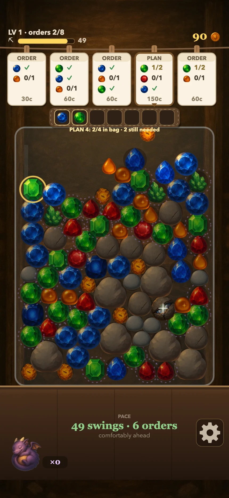
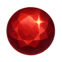
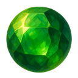
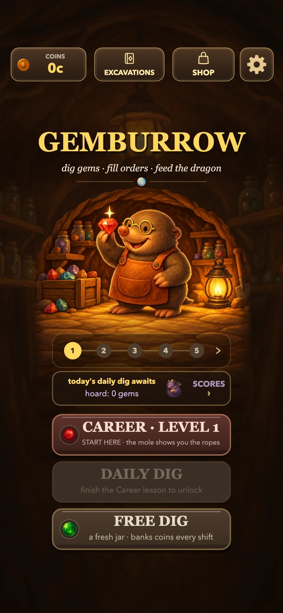
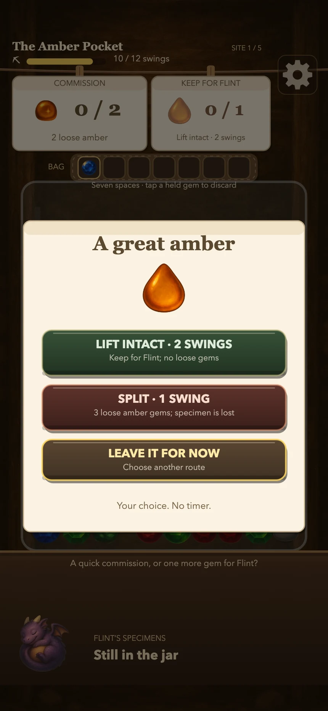
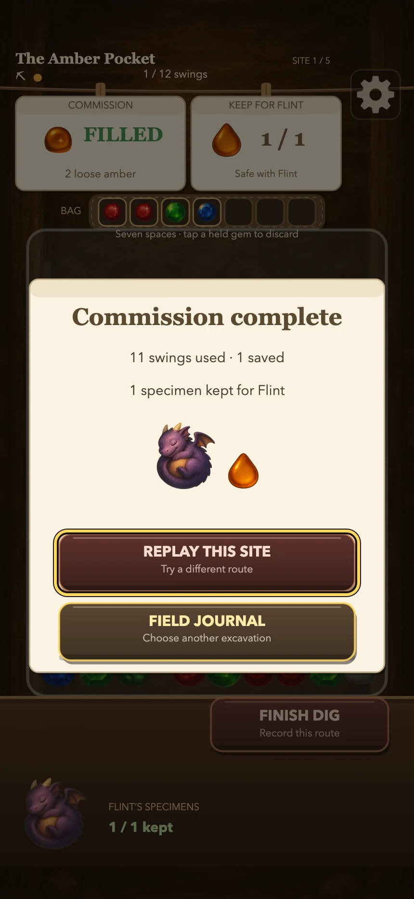
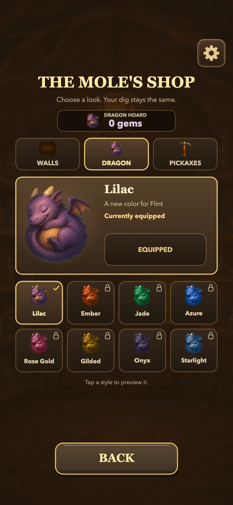

01 · Read
Plan a delivery
Select a customer card to see the remaining gems. The plan stays selected while you dig, and matching gems are marked in the pile.
A jar full of jewels. Seven satchel slots. A little dragon waiting for treasure. Dig out the gems, fill your customers’ orders, and see what you can bring home.
Play in your browser · No ads · Coming to iPhone



An actual Career dig · best played in portrait
Five customer orders hang above the jar. Choose an order to keep its plan visible, then work through the pieces above the gems you need.
Select a customer card to see the remaining gems. The plan stays selected while you dig, and matching gems are marked in the pile.
Clear exposed rocks and extract reachable gems. Pieces settle as the jar opens, so the next useful gem may need another route.
The satchel holds seven gems. Completed orders deliver automatically; tap a held gem to discard it when you need space.

Choose EXCAVATIONS from the main menu for five free, finite sites. Split a great gem into three loose gems for a commission, or spend two swings to lift it intact for Flint. Complete the commission to record your route and specimens in the field journal.
These optional digs have no timer. They do not award coins or change the Daily challenge; Career, Daily and Free Dig keep their own hoard, wardrobe and coin progress.
Take a peek insideCareer, Daily Dig and Free Dig are on the main menu, alongside the shop, dragon collection and scores. Excavations are an optional way to explore the same gems and rocks with a different goal.
Fill the orders before the pick is spent. The browser opens all 40 levels; the iPhone version includes levels 1–10, with 11–40 in the optional Full Burrow unlock.
Finish the introductory Career lesson to open today's Daily. Everyone starts with the same jar and budget. Connected results can appear on the Daily leaderboard.
Start a random jar, earn coins for the shop and build Flint's hoard. Free Dig results are not uploaded.
Swipe to explore. Select any screen for a closer look.




Start with Career, unlock today's Daily by finishing the Career lesson, or try Free Dig. The five optional excavations are also free. There are no ads, subscriptions, energy meters or coin packs.
The five excavations, all 40 Career levels, Free Dig and today's Daily are playable without a purchase. The browser has no purchase checkout; its archive shows recent results, without replaying past jars.
The optional one-time Full Burrow purchase opens Career levels 11–40 and the 14-day Daily archive. The five excavations, Career 1–10, Free Dig and today's Daily stay free. The unlock does not add excavation sites or change the Daily jar.
The journal and other progress stay in the app or browser where you played. Excavation, Career, Free Dig and archive results are not uploaded. Read about Daily leaderboard data.
Play free in your browser at hypersage.ai/gemburrow/play/. Progress is saved in that browser. An iPhone version is in development; its save is separate from the browser save.
Splitting costs one swing and puts three loose gems into the seven-slot satchel. Lifting intact costs two swings and keeps a specimen for Flint, without supplying loose gems. The specimen is recorded only if you complete the commission.
All five excavations are free. The browser also opens all 40 Career levels, Free Dig and today’s Daily Dig. The iPhone version includes Career levels 1–10, Free Dig and today’s Daily; the optional one-time Full Burrow purchase opens Career levels 11–40 and the 14-day Daily archive. It does not add excavation sites. There are no ads, subscriptions or coin packs.
Start Career from the main menu and finish its introductory lesson. Today’s Daily uses the same jar and starting budget for everyone. A connection is needed for leaderboard results.
No. Excavations use a fixed swing budget, and the great-gem choice has no countdown. Rush orders and rare-gem choices have their own visible timers.
Excavation records and other progress stay in the browser or app where you played. Clearing site data or deleting the app removes that local save. Excavation results are not uploaded; Daily leaderboard activity is described in the Privacy Policy.
Chrome on supported Android devices can provide optional vibration. Turn Haptics off in Settings if you prefer. Safari on iPhone does not support browser vibration, so that switch is hidden there. The iPhone app has its own haptics setting.
The gems, rocks, mole and dragon use AI-generated artwork curated for the game. The four soundtrack recordings were generated with AI and prepared for the game, with separate music and sound volume controls.
Start a Career dig, or choose an excavation. Questions? support@hypersage.ai.
Play Gemburrow free